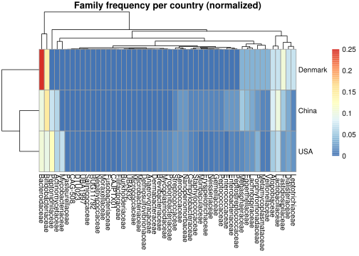
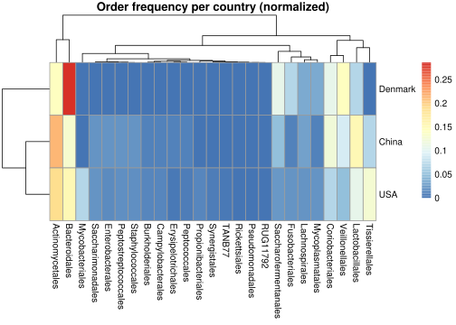
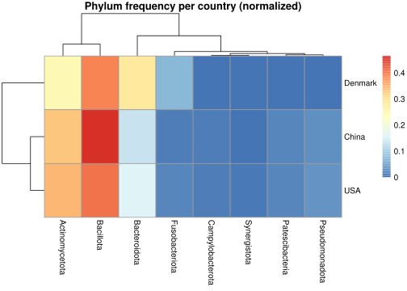
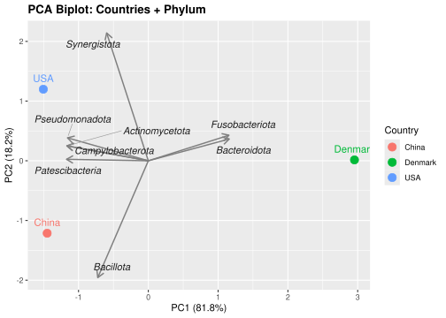
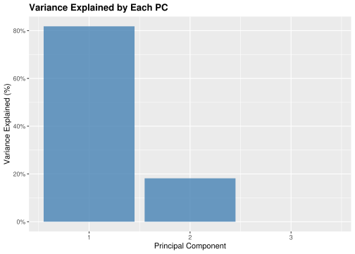

library(tidyverse)
library(pheatmap)
library(broom)
library(dplyr)
library(ggplot2)
library(ggrepel)
library(stats)
source("99_proj_func.R")08_analysis_4
Analysis 4 - Distributions between countries
1. Load libraries
2. Load data
genome_metadata_aug <- readr::read_tsv(file = "../data/03_dat_aug.tsv")Rows: 618 Columns: 25
── Column specification ────────────────────────────────────────────────────────
Delimiter: "\t"
chr (15): Genome, Genome_type, Country, Continent, Domain, Phylum, Class, Or...
dbl (10): Length, N_contigs, N50, GC_content, Completeness, Contamination, r...
ℹ Use `spec()` to retrieve the full column specification for this data.
ℹ Specify the column types or set `show_col_types = FALSE` to quiet this message.3. Preparing dataset
3.1 Removing NA values for “Countries”
From the augmented data, we’ll remove the genomes without country information.
4. About the functions
Functions used in this script were sourced from the file “99_proj_func.R”.
4.1 normalize()
As the sample sizes vary highly between countries in this dataset, we chose to normalize the taxa counts to allow for comparison between them. This was implemented in the function “normalize()”, which is used for producing both heatmaps and PCAs. It normalizes the counts of a variable tree_group based on the sample size of the countries to allow for easy production of several heatmaps. The function works by:
Counting the instances of each group per country.
Normalizing this count based on the sample size of that country.
And converting the data into wide format for easier analysis.
4.2 heatmap_abundance_per_country()
A function to produce the heatmap based on a group in the lineage. First, the data is normalized by sample size for each country; then it is converted into a matrix, and columns with zero variance are removed. The function then produces a heatmap using the pheatmap function. Again, the function was established to be able to quickly produce heatmaps for several tree_groups.
5. Heatmaps for exploration of abundance among countries
5.1 Creating heatmaps
Using the defined heatmap_abundancy_per_country() function to produce heatmaps for some of the “higher” taxa, Family, Order, and Phylum, to ensure clearer plots.
heatmap_family <- heatmap_abundance_per_country(tree_group = "Family")Warning: Use of .data in tidyselect expressions was deprecated in tidyselect 1.2.0.
ℹ Please use `all_of(var)` (or `any_of(var)`) instead of `.data[[var]]`
heatmap_order <- heatmap_abundance_per_country(tree_group = "Order")
heatmap_phylum <- heatmap_abundance_per_country(tree_group = "Phylum")
5.2 Saving results
The resulting heatmaps are saved as png’s to the results directory with appropriate sizes.
6. Principal Component Analysis
To investigate if there is a difference in the distribution of microbiomes between countries, a Prinicipal Component Analysis was carried out using the PCA_abundancy_per_country() function. To do this, the data was normalized based on the sample size for each country, after which it was analysed with the prcomp() function. From this fit, the results were extracted (eigenvalues and rotation matrix) and used to create a biplot of the loadings (p1) and determine the variance explained (plotted in p2). Both plots were saved to the results directory.
Running the function for Phylum, which has fewer variables, hence resulting in a clearer plot.
6.1 Running PCA
To run the PCA, the data was normalized by sample size of each country with the normalize() function based on the selected tree_group. In this case, “Phylum” was chosen to ensure a clearer plot. The data was then analysed with the prcomp() function and from the resulting fit, the eigenvalues and rotation matrix were extracted.
6.2 Create Biplot
The biplot was created plotting each countries “scores” for the first two principal components. In the plot, the loadings, extracted from the rotation_matrix, were included to show the variance in species abundance between these countries.
pca_scores <- pca_fit |>
broom::augment(
group_freq |>
dplyr::select(-Country)
) |>
mutate(Country = country_names)
pc1_var <- round(variance_explained$percent[1] * 100, 1)
pc2_var <- round(variance_explained$percent[2] * 100, 1)
loadings_biplot <- rotation_matrix |>
dplyr::filter(PC %in% c(1, 2)) |>
tidyr::pivot_wider(
names_from = PC,
values_from = value,
names_prefix = "PC"
) |>
dplyr::mutate(
PC1 = PC1 * 3,
PC2 = PC2 * 3)
p1 <- ggplot() +
ggplot2::geom_point(
data = pca_scores,
mapping = ggplot2::aes(x = .fittedPC1,
y = .fittedPC2,
color = Country),
size = 4,
show.legend = TRUE
) +
ggplot2::geom_text(
data = pca_scores,
mapping = ggplot2::aes(x = .fittedPC1,
y = .fittedPC2,
label = Country,
color = Country),
vjust = -1,
size = 4,
show.legend = FALSE
) +
ggplot2::geom_segment(
data = loadings_biplot,
mapping = ggplot2::aes(x = 0,
y = 0,
xend = PC1,
yend = PC2),
arrow = arrow(length = unit(0.3, "cm")),
color = "gray50",
linewidth = 0.7
) +
ggrepel::geom_text_repel(
data = loadings_biplot,
mapping = ggplot2::aes(
x = PC1,
y = PC2,
label = column),
color = "gray10",
ize = 3.5,
fontface = "italic",
box.padding = 0.5,
point.padding = 0.3,
segment.color = "gray60",
segment.size = 0.3,
max.overlaps = Inf
) +
ggplot2::labs(
title = paste0("PCA Biplot: Countries + ", tree_group_PCA),
x = paste0("PC1 (", pc1_var, "%)"),
y = paste0("PC2 (", pc2_var, "%)")
) +
ggplot2::theme(
legend.position = "right",
plot.title = element_text(face = "bold")
)Warning in ggrepel::geom_text_repel(data = loadings_biplot, mapping =
ggplot2::aes(x = PC1, : Ignoring unknown parameters: `ize`p1
6.3 Create plot of variance explained by the PCs
To visualize how much variance was explained by the principal components, a barplot was created using the eigenvalues of the first three principal components.
p2 <- ggplot2::ggplot(
data = variance_explained,
mapping = ggplot2::aes(x = PC, y = percent)
) +
ggplot2::geom_col(fill = "steelblue",
alpha = 0.8) +
ggplot2::scale_y_continuous(labels = scales::percent_format()) +
ggplot2::labs(
title = "Variance Explained by Each PC",
x = "Principal Component",
y = "Variance Explained (%)"
) +
ggplot2::theme(plot.title = element_text(face = "bold"))
p2
6.4 Save plots
Using ggsave to save plots in the results directory.
7. Tests: Species’ distribution between counties
7.1 Chi-squared test, with permutation.
Test if the distribution of species differs between countries. The groups abundancy is counted using the counting_species() function. We use simulate.p.value = TRUE to compute the p-value via Monte Carlo simulation, which is more reliable when some expected counts are small or zero.
7.1.1 For Species
data <- counting_species(data = genomes_country,
tree_group = "Species")
tbl <- as.matrix(data[ , -1])
rownames(tbl) <- data$Country
stats::chisq.test(
x = tbl,
simulate.p.value = TRUE,
B = 1e6)
Pearson's Chi-squared test with simulated p-value (based on 1e+06
replicates)
data: tbl
X-squared = 202.94, df = NA, p-value = 1The difference in distribution of species between countries is not significant at all, as the p-value is 1.
7.1.2 For Family
Pearson's Chi-squared test with simulated p-value (based on 1e+06
replicates)
data: tbl
X-squared = 82.258, df = NA, p-value = 0.7995The difference in distribution of species between countries is not significant at all, as the p-value is 0.8.
7.1.3 For Phylum
Pearson's Chi-squared test with simulated p-value (based on 1e+06
replicates)
data: tbl
X-squared = 11.61, df = NA, p-value = 0.6059The difference in distribution of species between countries is not significant, as the p-value is 0.6
8. Endometriosis test
To assess whether genes associated with endometriosis are significantly more represented in one country than another, a Fisher’s exact test is performed to compare the frequency of these genes. The Fisher test is chosen because the number of endometriosis-associated genomes is low and the sample sizes between countries are highly uneven, especially for Denmark. Fisher’s exact test can handle both sparse data and unequal group sizes.
The purpose of the test is to answer:
Does the proportion of endometriosis-associated genomes differ between countries?
Countries are compared pairwise. For each comparison, the null hypothesis states that the proportion of endometriosis-associated genomes is the same in both countries, while the alternative hypothesis states that the proportions differ.
Before running the test, we confirm that the required variables are present:
names(genomes_country) [1] "Genome" "Genome_type"
[3] "Length" "N_contigs"
[5] "N50" "GC_content"
[7] "Completeness" "Contamination"
[9] "rRNA_5S" "rRNA_16S"
[11] "rRNA_23S" "tRNAs"
[13] "Country" "Continent"
[15] "Domain" "Phylum"
[17] "Class" "Order"
[19] "Family" "Genus"
[21] "Species" "Completeness_quality"
[23] "Contamination_quality" "Overall_quality"
[25] "endometriosis_associated"Both the Country and endometriosis_associated variables are present and we are able to make the analysis.
As we have to run the fisher exact test between the three country combinations, the test is made into a function. The columns that the functions use are made variable, so the function can be used to make a fisher exact test comparing the country with other variables, if we wanted to do that. A function is also made to compute the results and store them in a shared tibble with all the pairs tested against each other. These are stored in the 99_proj_func.R script
We then define the country pairs that we want to compare:
pairs <- list(
c("USA", "China"),
c("USA", "Denmark"),
c("Denmark", "China")
)The functions is then used to compute the fisher exact test between the differen country pairs:
all_fisher_results <- compute_fisher_results(
data = genomes_country,
country_var = "Country",
outcome_var = "endometriosis_associated",
pairs = pairs
)
all_fisher_results# A tibble: 3 × 6
country1 country2 p_value odds_ratio CI_low CI_high
<chr> <chr> <dbl> <dbl> <dbl> <dbl>
1 USA China 0.0205 2.67 1.11 7.78
2 USA Denmark 0.155 4.65 0.738 193.
3 Denmark China 1 0.576 0.012 5.08The fisher exact tests showed a significant difference in the proportion of endometriosis associated between USA and China with a p-value on 0.02. USA is having a 2.7 fold higher odds of endometriosis associated genomes.
No significant differences were observed between USA and Denmark (p = 0.155) or between Denmark and China (p = 1). These non-significant results are likely due to the very small number of Danish and Chinese genomes, resulting in wide confidence intervals and low statistical power.